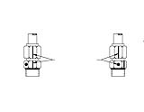

Моменты затяжки стандартного крепежа
Моменты затяжки стандартного крепежа
Болты, шпильки и т.д.
Общие сведения
Нормы затяжки определены по марке стали в соответствии со стандартом SAE. Если не указано иное в данной инструкции, то во всяком случае необходимо следовать данным нормам. Если существует необходимость замены болтов, но отсутствуют болты того же класса прочности, то можно заменить их только на болты более высокого класса прочности.
Нормы
При затяжке комплекта болтов следует затягивать их с равномерным увеличением значения по диагонали. Нельзя затянуть их до достижения максимума за один прием. Следует затягивать болты по диагонали. В некоторых случаях следует затянуть их специальным методом, указанным в данной инструкции.
Классы прочности болтов
Чем выше класс болтов, тем выше прочность. Например, болт класса прочности 8 или 10,9 по SAE, соответственно, более прочный, чем класс прочности 5 или 8,8 по SAE. Если карьерный самосвал оснащен колесам с электроприводом, то следует использовать болты класса прочности класса прочности 5 или 8,8 по SAE или более высокопрочные болты.
ПРИМЕЧАНИЕ:
1. В таблице1 и таблице 2 приведены значения моментов затяжки, определенные в зависимости от размера резьбы, число витков, класса прочности.
2. Эти таблицы используются при сборке и ремонте.
3. Не рекомендуется использовать противоморозные добавки.
4. Не допускается повторное использование болтов классов прочности 8 и 10,9 по SAE. Однако допускается повторное затягивание ослабленных болтов, затягивание соседних болтов не считается повторным использованием.
5. Класс прочности 8,8 приближается к классу прочности 5 по SAE.
6. Прочностное свойство болта класса прочности 9,8 примерно на 9% выше, чем класса прочности 5 SAE.
7. Класс прочности 10,9 приближается к классу прочности 8 по SAE.
8. Рекомендуется применять следующий метод во избежание разрушения резьбы с мелким шагом:
a. перед установкой очистить резьбу;
b. сначала затягивать вручную, чтобы обеспечить правильность установки резьбового соединения.
Штуцеры гидравлических шлангов
Общие сведения
Правильная сборка и надлежащее затягивание штуцеров шлангов гидравлической системы позволяют снизить вероятность возникновения угрозы утечки, сократить время и частоту ремонта, увеличить целостность и надежность гидравлической системы.
ПРИМЕЧАНИЕ:
1. Значения моментов затяжки, указанные в таблицах, распространяются на штуцеры шлангов из стали и нержавеющей стали, переходные соединения, фланцы, концы шлангов и соединения масляных каналов по стандарту SAE.
2. Не нужно смазать штуцеры шлангов и соединения масляных каналов.
3. Следует смазать O-образные кольца гидравлическим маслом, которое совместимо с используемым маслом в гидравлической системе.
4. Следует нанести герметик на резьбу штуцеров или использовать тефлоновый скотч. Необходимо выбирать герметик с меньшей вероятностью загрязнения гидравлической системы.
Методы установки и затяжки
Имеются три основные методы затяжки соединений:
1. Метод приложения крутящего момента
a. Правильно затянуть детали с помощью стандартного динамометрического ключа и других вспомогательных инструментов.
b. Затянуть стандартных установочных и крепежных элементов в соответствии со значениями моментов затяжки, рекомендуемыми в таблицах.
c. Типовые объекты установки:
(1) Выступ O-образного кольца, штуцер шланга, соединение масляного канала, резьбовой фитинг и штуцер.
(2) Трубная гайка и конусная гайка.
2. Метод FFFT (см. рис. 1)
a. Использовать подходящий ключ для затяжки крепежа.
b. Порядок установки:
(1) Затянуть соединение методом FFFT (снять ослабленную деталь с соединения).
| Размер | Значение момента затяжки крепежного элемента класса прочности 5 по SAE | Значение момента затяжки крепежного элемента класса прочности 8 | ||
| фут-фунт | Н.м | фут-фунт | Н.м | |
| 1/4-20 | 6 | 8 | 9 | 12 |
| 1/4-28 | 7 | 9 | 10 | 14 |
| 5/16-18 | 13 | 18 | 18 | 24 |
| 5/16-24 | 14 | 19 | 20 | 27 |
| 3/8-16 | 23 | 31 | 32 | 43 |
| 3/8-24 | 26 | 35 | 37 | 50 |
| 7/16-14 | 37 | 50 | 53 | 72 |
| 7/16-20 | 41 | 58 | 58 | 79 |
| 1/2-13 | 55 | 75 | 80 | 108 |
| 1/2-20 | 65 | 90 | 90 | 122 |
| 9/16-12 | 80 | 108 | 115 | 156 |
| 9/16-18 | 90 | 122 | 130 | 176 |
| 5/8-11 | 115 | 156 | 160 | 217 |
| 5/8-16 | 125 | 170 | 180 | 244 |
| 3/4-10 | 200 | 271 | 280 | 380 |
| 3/4-16 | 225 | 305 | 315 | 427 |
| 7/8-9 | 325 | 441 | 455 | 617 |
| 7/8-14 | 355 | 481 | 500 | 678 |
| 1-8 | 485 | 658 | 680 | 922 |
| 1-12 | 530 | 719 | 745 | 1010 |
| 1-14 | 440 | 597 | 600 | 814 |
| 1 1/8-7 | 590 | 800 | 970 | 1315 |
| 1 1/8-12 | 670 | 900 | 1080 | 1465 |
| 1 1/4-7 | 835 | 1132 | 1360 | 1844 |
| 1 1/4-12 | 935 | 1268 | 1510 | 2048 |
| 1 3/8-6 | 1095 | 1485 | 1790 | 2427 |
| 1 3/8-12 | 1255 | 1702 | 2030 | 2753 |
| 1 1/2-6 | 1455 | 1973 | 2380 | 3228 |
| 1 1/2-12 | 1645 | 2231 | 2660 | 3607 |
ПРИМЕЧАНИЕ: При первой затяжке соединения с помощью инструмента или других приспособлений следует обратить внимание на защиту соединения от перетягивания.
(2) Нанести метки на статической поверхности и поверхности вращения для облечения повторного сопряжения поверхностей.
(3) Нанести метку в конечной точке затяжки.
(4) Повернуть соединение с помощью подходящего инструмента, чтобы совместить цифру на поверхности вращения с определенной меткой. Зафиксировать в этом положении.
Табл. 2. Моменты затяжки болтов (крепежных элементов с метрической резьбой)
| Размер | Класс прочности 8,8 | Класс прочности 9,8 | Класс прочности 10,9 | |||
| фут-фунт | Н.м | фут-фунт | Н.м | фут-фунт | Н.м | |
| M6.0-1.00 | - | - | 6 | 9 | ||
| M6.3-1.00 | - | - | 8 | 10 | 10 | 13 |
| M6.0-0.75 | - | - | 7 | 10 | 9 | 12 |
| M8.0-1.25 | - | - | 15 | 21 | 20 | 27 |
| M8.0-1.00 | - | - | 17 | 23 | 21 | 29 |
| M10.0-1.50 | - | - | 31 | 42 | 39 | 54 |
| M10.0-1.25 | - | - | 32 | 45 | 41 | 57 |
| M12.0-1.75 | - | - | 53 | 74 | 68 | 94 |
| M12.0-1.25 | - | - | 58 | 81 | 74 | 103 |
| M14.0-2.00 | - | - | 85 | 118 | 109 | 151 |
| M14.0-1.50 | - | - | 92 | 128 | 118 | 163 |
| M16.0-2.00 | 122 | 169 | - | - | 169 | 234 |
| M16.0-1.50 | 130 | 181 | - | - | 180 | 250 |
| M18.0-2.50 | 169 | 234 | - | - | 234 | 323 |
| M18.0-1.50 | 190 | 263 | - | - | 262 | 363 |
| M20.0-2.50 | 239 | 330 | - | - | 330 | 457 |
| M20.0-1.50 | 265 | 367 | - | - | 366 | 507 |
| M22.0-2.50 | 325 | 451 | - | - | 450 | 623 |
| M22.0-1.50 | 357 | 495 | - | - | 494 | 684 |
| M24.0-3.00 | 412 | 571 | - | - | 570 | 790 |
| M24.0-2.00 | 450 | 623 | - | - | 622 | 861 |
| M27.0-3.00 | 605 | 837 | - | - | 836 | 1158 |
| M27.0-2.00 | 652 | 903 | - | - | 902 | 1250 |
| M30.0-3.50 | 820 | 1135 | - | - | 1134 | 1570 |
| M30.0-2.00 | 908 | 1258 | - | - | 1258 | 1740 |
| M30.0-1.50 | 939 | 1300 | - | - | 1299 | 1799 |
| M36.0-4.00 | 1433 | 1985 | - | - | 1982 | 2745 |
| M36.0-3.00 | 1517 | 2102 | - | - | 2099 | 2907 |
c. Типовые объекты установки:
(1) Трубная гайка и конусная гайка.
(2) Трубное соединение, труба и гайка поворотного конца, не подлежащих затяжки с помощью динамометрического ключа.
3. Метод TFFT (см. рис. 1)
a. Использовать подходящий ключ для затяжки крепежа.
b. Порядок установки:
(1) Затянуть соединение методом FFFT (снять ослабленную деталь с соединения).
(2) Нанести метки на статической поверхности и поверхности вращения для облечения повторного сопряжения поверхностей.
(3) Нанести метку в конечной точке затяжки.
Рис. 1. Порядок затяжки соединений
Табл. 3. Развальцованная гайка 37° и гайка без развальцовки, соединение выступа О-образного кольца, соединение выступа регулируемого О-образного кольца, поворотный конец шланга, заглушка выступа О-образного кольца с шестигранной головкой
| Номер СТП | Размер резьбы трубного соединения (фут-фунт) | Момент затяжки трубного соединения (Н.м) | Трубное соединение F.F.F.T | Размер резьбы гайки | Момент затяжки гайки (фут-фунт) | Момент затяжки гайки (Н.м) | Трубная гайка F.F.F.T | Конусная гайка F.F.F.T |
| 2 | 5/16-24 | 5 +/- 1 | 1 | 5/16-24 | 3 +/- 1 | 4 +/- 1 | ||
| 3 | 3/8-24 | 11 +/- 1 | 1 | 3/8-24 | 6 +/- 1 | 8 +/- 1 | ||
| 4 | 7/16-20 | 14 +/- 1 | 1 | 7/16-20 | 12 +/- 1 | 16 +/- 1 | 2 | 2 |
| 6 | 9/16-18 | 27 +/- 2 | 1 1/2 | 9/16-18 | 21 +/- 1 | 29 +/- 1 | 1 1/2 | 1 1/4 |
| 8 | 3/4-16 | 42 +/- 2 | 1 1/2 | 3/4-16 | 45 +/- 2 | 61 +/- 3 | 1 1/2 | 1 |
| 10 | 7/8-14 | 60 +/- 2 | 1 1/2 | 7/8-14 | 60 +/- 5 | 82 +/- 7 | 1 1/2 | 1 |
| 12 | 1 1/16-12 | 80 +/- 5 | 1 1/2 | 1 1/16-12 | 85 +/- 5 | 116 +/- 7 | 1 1/4 | 1 |
| 14 | 1 3/16-12 | 105 +/- 6 | 1 1/2 | 1 5/16-12 | 105 +/- 5 | 143 +/- 7 | 1 | 1 |
| 16 | 1 5/16-12 | 115 +/- 6 | 1 1/2 | 1 5/16-12 | 120 +/- 5 | 163 +/- 7 | 1 | 1 |
| 20 | 1 5/8-12 | 225 +/- 12 | 1 1/2 | 1 5/8-12 | 170 +/- 10 | 231 +/- 14 | 1 | 1 |
| 24 | 1 7/8-12 | 250 +/- 12 | 1 1/2 | 1 7/8-12 | 200 +/- 15 | 272 +/- 20 | 1 | 1 |
| 32 | 2-12 | 325 +/- 15 | 1 1/2 | 2 1/2-12 | 270 +/- 20 | 367 +/- 27 | 1 | 1 |
Табл. 4. Уплотняющие соединения поверхностей O-образных колец
| Номер СТП | Размер резьбы трубного соединения (фут-фунт) | Момент затяжки трубного соединения (Н.м) | Трубное соединение F.F.F.T | Размер резьбы гайки | Момент затяжки гайки (фут-фунт) | Момент затяжки гайки (Н.м) | Трубная гайка F.F.F.T | Конусная гайка F.F.F.T |
| 4 | 7/16-20 | 15 +/- 1 | 1 1/2 | 9/16-18 | 11 +/- 1 | 15 +/- 1 | 2 | 2 |
| 6 | 9/16-18 | 25 +/- 1 | 1 1/2 | 11/16-16 | 19 +/- 1 | 26 +/- 2 | 1 1/2 | 1 1/4 |
| 8 | 3/4-16 | 55 +/- 5 | 1 1/2 | 13/16-16 | 33 +/- 2 | 45 +/- 2 | 1 1/2 | 1 |
| 10 | 7/8-14 | 76 +/- 4 | 1 1/2 | 1-14 | 48 +/- 2 | 64 +/- 4 | 1 1/2 | 1 |
| 12 | 1 1/16-12 | 130 +/- 5 | 1 1/2 | 1 3/16-12 | 67 +/- 3 | 93 +/- 2 | 1 | 1 |
| 16 | 1 5/16-12 | 210 +/-10 | 2 | 1 7/16-12 | 96 +/- 4 | 130 +/- 5 | 1 | 1 |
| 20 | 1 5/8-12 | 245 +/- 35 | 2 | 1 11/16-12 | 133 +/- 7 | 180 +/- 10 | 1 | 1 |
| 24 | 1 7/8-12 | 315 +/- 45 | 2 | 2-12 | 157 +/- 7 | 212 +/- 12 | 1 | 1 |
(4) Повернуть соединение с помощью подходящего инструмента, чтобы совместить цифру на поверхности вращения с определенной меткой. Зафиксировать в этом положении.
c. Типовые объекты установки:
(1) Трубное соединение.
(2) Трубное соединение, не подлежащее затяжке с помощью динамометрического ключа.
Табл. 5. Трубные резьбовые соединения
| Размер трубной резьбы труб | Момент затяжки (с герметиком), (фут-фунт) | Момент затяжки (без герметика), (фут-фунт) | Момент затяжки (с герметиком), (Н.м) | Момент затяжки (без герметика), (Н.м) | T.F.F.T |
| 1/16-27 | 10 +/- 1 | 15 +/- 1 | 14 +/- 1 | 20 +/- 1 | 2-3 |
| 1/8-27 | 15 +/- 1 | 20 +/- 1 | 20 +/- 1 | 27 +/- 3 | 2-3 |
| 1/4-18 | 20 +/- 2 | 25 +/- 2 | 27 +/- 3 | 34 +/- 3 | 1.5-3 |
| 3/8-18 | 25 +/- 2 | 35 +/- 2 | 34 +/- 3 | 48 +/- 3 | 2-3 |
| 1/2-14 | 35 +/- 2 | 45 +/- 3 | 48 +/- 3 | 61 +/- 4 | 2-3 |
| 3/4-14 | 45 +/- 3 | 55 +/- 3 | 61 +/- 4 | 75 +/- 4 | 2-3 |
| 1-11 1/2 | 55 +/- 3 | 65 +/- 3 | 75 +/- 4 | 88 +/- 4 | 1.5-2.5 |
| 1 1/4-11 1/2 | 70 +/- 4 | 80 +/- 4 | 95 +/- 5 | 109 +/- 5 | 1.5-2.5 |
| 1 1/2-11 1/2 | 80 +/- 4 | 95 +/- 5 | 109 +/- 5 | 129 +/- 7 | 1.5-2.5 |
| 2-11 1/2 | 95 +/- 5 | 120 +/- 5 | 129 +/- 7 | 163 +/- 7 | 1.5-2.5 |
Табл. 6. Фланцевые соединения
| Размер фланца | Размер резьбы | Длина болта | Момент затяжки (фут-фунт) | Момент затяжки (Н.м) |
| 1/2 | 5/16-18 | 1 1/4 | 17 +/- 2 | 22 +/- 2 |
| 3/4 | 3/8-16 | 1 1/4 | 25 +/- 4 | 34 +/- 6 |
| 1 | 3/8-16 | 1 1/4 | 31 +/- 4 | 43 +/- 5 |
| 1 1/4 | 7/16-14 | 1 1/2 | 40 +/- 5 | 56 +/- 6 |
| 1 1/2 | 1/2-13 | 1 1/2 | 52 +/- 7 | 70 +/- 9 |
| 2 | 1/2-13 | 1 1/2 | 61 +/- 7 | 81 +/- 9 |
| 2 1/2 | 1/2-13 | 1 3/4 | 86 +/- 7 | 113 +/- 9 |
| 3 | 5/8-11 | 1 3/4 | 145 +/- 7 | 194 +/- 9 |
| 3 1/2 | 5/8-11 | 2 | 125 +/- 8 | 169 +/- 12 |
| 4 | 5/8-11 | 2 | 125 +/- 8 | 169 +/- 12 |
| 5 | 5/8-11 | 2 1/4 | 125 +/- 8 | 169 +/- 12 |
Табл. 7. Фланцевые соединения
| Размер фланца | Размер резьбы | Длина болта | Момент затяжки (фут-фунт) | Момент затяжки (Н.м) |
| 1/2 | 5/16-18 | 1 1/4 | 17 +/- 2 | 22 +/- 2 |
| 3/4 | 3/8-16 | 1 1/2 | 29 +/- 4 | 40 +/- 5 |
| 1 | 7/16-14 | 1 3/4 | 46 +/- 4 | 62 +/- 6 |
| 1 1/4 | 1/2-13 | 1 3/4 | 69 +/- 6 | 93 +/- 9 |
| 1 1/2 | 5/8-11 | 2 1/4 | 125 +/- 7 | 169 +/- 12 |
| 2 | 3/4-10 | 2 3/4 | 208 +/- 8 | 282 +/- 12 |
Дополнения – моменты затяжки стандартного крепежа
200-0070
Дополнения – моменты затяжки стандартного крепежа
200-0070
4
5
Дополнения – моменты затяжки стандартного крепежа
200-0070
3
Дополнения – моменты затяжки стандартного крепежа
200-0070
Дополнения – моменты затяжки стандартного крепежа
200-0070
Дополнения – моменты затяжки стандартного крепежа
200-0070
6
7
Дополнения - Масса компонентов
200-0090
Конечная точка
Исходная точка
Затяжка вручную
Правильная затяжка
Иллюстрации

